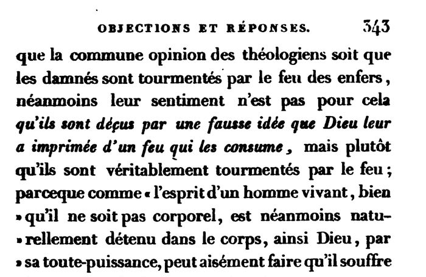

The objection: the damned deceived by an idea of fire (p. 322)
French: vol. II, p. 322, scan. The objectors’ fifth “scruple”.
From this scruple a fifth arises, which takes its force from the deception you wish to deny entirely to God. For if several theologians hold that the damned, angels as well as men, are continually deceived by the idea of a devouring fire that God has imprinted in them, so that they firmly believe, and imagine they actually see and feel, that they are tormented by a fire that consumes them, although in fact there is none: can God not deceive us by similar appearances, and continually impose on us by ceaselessly imprinting such false and deceitful ideas in our souls, so that we think we see very clearly, and touch with each of our senses, things that are nothing outside us, when in truth there is no sky, no stars, no earth, and we have no arms, no feet, no eyes, and so on?
Original French
De ce scrupule en naît un cinquième, qui prend sa force de cette déception que vous voulez dénier entièrement à Dieu ; car si plusieurs théologiens sont dans ce sentiment, que les damnés, tant les anges que les hommes, sont continuellement déçus par l’idée que Dieu leur a imprimée d’un feu dévorant, en sorte qu’ils croient fermement et s’imaginent voir et ressentir effectivement qu’ils sont tourmentés par un feu qui les consume, quoiqu’en effet il n’y en ait point, Dieu ne peut-il pas nous décevoir par de semblables espèces, et nous imposer continuellement, imprimant sans cesse dans nos âmes de ces fausses et trompeuses idées ; en sorte que nous pensions voir très clairement et toucher de chacun de nos sens des choses qui toutefois ne sont rien hors de nous, étant véritable qu’il n’y a point de ciel, point d’astres, point de terre, et que nous n’avons point de bras, point de pieds, point d’yeux, etc. ?
The reply: “véritablement tourmentés par le feu” (p. 343)
French: vol. II, p. 343, scan; the sentence begins at the foot of p. 342 (“Et bien que …”). Highlighted: the words Lecky quotes.

And although the common opinion of the theologians is that the damned are tormented by the fire of hell, their view is not, for all that, that they are deceived by a false idea of a consuming fire that God has imprinted in them, but rather that they are truly tormented by fire; because “just as the spirit of a living man, though it is not corporeal, is nevertheless naturally held in the body, so God by his omnipotence can easily make it suffer the touch of corporeal fire after its death, etc.” See the Master of the Sentences, book IV, distinction 44.
Original French
Et bien que la commune opinion des théologiens soit que les damnés sont tourmentés par le feu des enfers, néanmoins leur sentiment n’est pas pour cela qu’ils sont déçus par une fausse idée que Dieu leur a imprimée d’un feu qui les consume, mais plutôt qu’ils sont véritablement tourmentés par le feu ; parceque comme « l’esprit d’un homme vivant, bien qu’il ne soit pas corporel, est néanmoins naturellement détenu dans le corps, ainsi Dieu, par sa toute-puissance, peut aisément faire qu’il souffre les atteintes du feu corporel après sa mort, etc. » Voyez le Maître des sentences, liv. IV, dist. XLIV.
| Lecky (note 176) | Cousin’s text |
|---|---|
| qu’ils sont deçus | qu’ils sont déçus |
| est néanmoins détenu dans le corps | est néanmoins naturellement détenu dans le corps |
| après la mort | après sa mort |
Backlinks
Every place in Rationalism in Europe that links to this page (generated automatically when the site is built).
- Chapter III: note 176